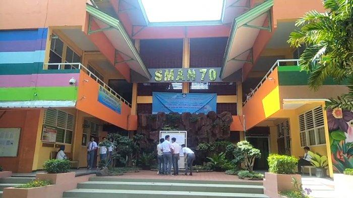

SMAN 70 Jakarta adalah sekolah menengah atas yang berakreditasi A dan terletak di Jl. Bulungan Blk. C No.1, RT.11/RW.7, Kramat Pela, Kec. Kby. Baru, Kota Jakarta Selatan, Daerah Khusus Ibukota Jakarta 12130. SMA 70 setiap angkatannya memiliki 10 kelas (terkadang 8 Kelas IPA dan 2 IPS atau 7 Kelas IPA dan 3 IPS). SMAN 70 Jakarta is an A-accredited senior high school located on Jl. Bulungan Blk. C No.1, RT.11 / RW.7, Kramat Pela, Kec. Kby. Baru, Kota Jakarta Selatan, Special Capital Region of Jakarta 12130. SMA 70 each class has 10 classes (sometimes 8 science classes and 2 social studies or 7 science classes and 3 social studies classes). SMAN 70 Jakarta es una escuela secundaria con acreditación A ubicada en Jl. Bulungan Blk. C No. 1, RT.11 / RW.7, Kramat Pela, Kec. Kby. Baru, Kota Yakarta Selatan, Región Capital Especial de Yakarta 12130. SMA 70 cada clase tiene 10 clases (a veces 8 clases de ciencias y 2 de estudios sociales o 7 clases de ciencias y 3 clases de estudios sociales). SMAN 70 Jakarta is een A-geaccrediteerde middelbare school gelegen op Jl. Bulungan Blk. C nr. 1, RT.11 / RW.7, Kramat Pela, Kec. Kby. Baru, Kota Jakarta Selatan, Jakarta Special Capital Region 12130. SMA 70 elke klas heeft 10 klassen (soms 8 wetenschappelijke klassen en 2 sociale studies of 7 wetenschappelijke klassen en 3 sociale studies).